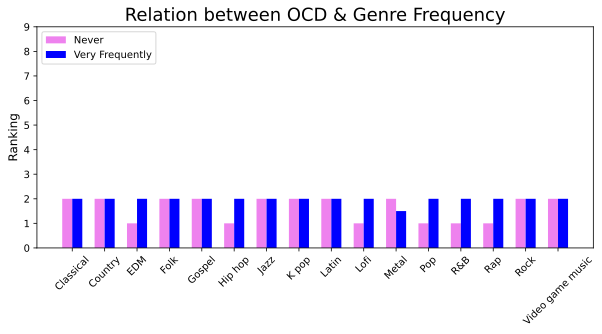
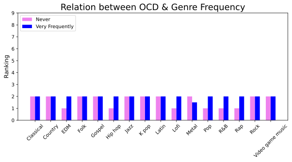

Background
As studies have been conducted, it has been shown that music not only shapes individual and cultural identities, but also plays a strong role in mood regulation and improvement of mental health. As students, music plays a large role in our lives whether that’s for studying, being active, or hanging out with friends. With the rise of technology, it is especially easier to quantify one’s music statistics, meaning people can report exactly how often they listen to music or exactly what genres they are listening to. Some of our inspiration comes from Spotify Wrapped, a marketing campaign about individual user’s activity over the past year. Seeing how music habits differentiate from person to person motivated us to understand if those habits have any effect on mental health or something greater. We hope to take advantage of the increase in available music streaming data to know in what specific ways listening to music has helped us and what further steps people can take to maximize their potential benefit. To do this, we want to look at how variables such as hours spent listening to music, genres listened to, and context in which the music is listened to can improve disorders such as Anxiety, Depression, and more.
Summary Visualizations
Below are some figures summarizing our data set.
Firstly, to better understand our data set, we wanted to look at the respondents’ background. This graph shows the age distribution of the dataset, showing that our data is skewed. Out of 736 entries, the majority of respondents were between the ages of 15-24. This helps us to understand that we are looking at a younger subset of the world’s population, which could cause bias in our findings.
Next, we created boxplots to represent the primary streaming services by age. This figure shows Pandora as the streaming service primarily used by an older demographic while Spotify and Apple Music users had an average age of 20.

This heatmap demonstrates the correlations of the numerical variables, showing that the mental health illnesses are correlated, which we will look closer into later. There are no clear relationships between the more musical variables and the other numerical variables, specifically "Hours per day" and "BPM", therefore this visualization sets the stage to understand the other graphs in our project.
One of the first relationships we were interested in examining was whether a correlation exists between hours of music listened to per day and age for anxiety, insomnia, and OCD respectively. Three scatter plot subplots were created placing Age on the y-axis and Hours per day on the x-axis. While these graphs appear similar due to the likelihood that the same respondent would report multiple mental health conditions, they demonstrate that those who listen to more music per day tend to be younger. This is shown by the drop off in points as hours per day increases. People of all ages listen to 0-5 hours of music per day, but from 5 hours per day onward, respondents are primarily below the age of 40. This correlation also remains consistent for all three mental health conditions.
This histogram reveals the relations between the frequency that people listen to various music genres and insomnia.
Visualizations
The visualizations below dive into answering deeper, more specific questions. The first three visualizations are comparing the mental health illnesses to see if there any stark correlations, in order to understand if there is a specific mental health illness that we should hone in on. Our dataset is unique in the sense that respondents can report multiple mental health conditions, we wanted to see if any of these conditions had any linear relationships.
Anxiety and depression appear to have a positive linear relationship. OCD and insomnia do not have clear relationshps with anxiety, or with each other. Now that we clearly see the linear relationship that anxiety and depression have, we can solely use anxiety rather than depression in our analysis, since they are correlated.
This boxplot demonstrates the ranges of hours listened per day, for each genre. It helps answer the question of how each listener spends their time in the day, which may relate with a mental health illness. For the genres with a higher range of hours listened to per day, Insomnia might be a related mental health illness.
In our analysis, we examined a large dataset comprising 736 individuals to closely observe age, daily music listening habits, and self-reported anxiety levels. To navigate the substantial overlap in our data, we created four distinct graphs, categorizing ages into ranges of 0-20, 21-40, 41-60, and 61-80. These graphs offer a clearer picture of how age relates to hours spent listening to music each day and its correlation with reported anxiety levels. In our visualizations, the size of the circles directly corresponds to the severity of anxiety, with larger circles denoting higher rankings. Interestingly, we found that the majority of people in our sample were between the ages of 10 and 40, with a notable decrease in both sample size and circle sizes in older age brackets. This trend aligns with our findings that younger participants, who report higher levels of anxiety tend to listen to more hours of music daily. Conversely, older participants, who exhibit lower anxiety rankings also show reduced music listening hours. Thus, our data suggests a direct association between heightened anxiety and increased music consumption among younger individuals, offering valuable insights into the intricate dynamics between age, music listening habits, and mental well-being.

The graph illustrates the correlation between various mental health conditions and the self-reported rankings by participants categorized as instrumentalists and composers versus those who are not. It provides a nuanced understanding of how different musical backgrounds may influence mental health perceptions. The conclusions drawn from this analysis indicate that both instrumentalists and composers tend to report slightly higher mental health rankings compared to non-musicians. However, an interesting exception lies in the realm of OCD, where rankings remain consistently low across all musical backgrounds. This suggests that while musical engagement may have a positive impact on overall mental well-being, certain mental health conditions such as OCD may exhibit more uniform rankings irrespective of musical expertise, highlighting the complexity of mental health dynamics within different population groups.
 

These four graphs show the correlation between various mental health conditions and their relationship with genre frequency. While a consistent relationship is generally absent or minimal across most genres, specific conclusions can be drawn for each mental health condition. Regarding anxiety, the most notable correlation appears with Pop music frequency, where an increase in frequency aligns with higher anxiety rankings. For depression, Rock and R&B genres show consistent relationships, with higher frequency correlating with increased depression rankings. Interestingly, frequent listeners of Country and Gospel genres report lower insomnia rankings, whereas genres like Metal, Lofi, Jazz, Rock, and K Pop display the opposite trend, where higher frequencies correspond to higher insomnia rankings. Finally, in terms of OCD, the most drastic difference is seen in R&B, where frequent listening is associated with higher OCD rankings.
Questions Answered
- Does primary streaming service differ between age ranges?
- What can be inferred about the relationships between the numerical variables in the data?
- How does age affect the hours listened per day?
- Are they correlations between the mental health illnesses themselves? How can we use this to efficiently graph?
- How many hours a day does each person listen to, given their favorite genre?
Evaluation
Answers to the questions:
- Yes, primary streaming services shows that younger people listen to spotify and apple music while older people listen to pandora.
- The mental health illnesses had noticeable correlations, while age and anxiety had a small correlation. Insomnia and hours per day also had a small correlation.
- Younger people listen to more music during the day, which may connect to the anxiety correlation, perhaps indicating that listening to more music may have an effect on mental health ratings.
- Anxiety and depression have a positive linear relationship, indicating that we can use anxiety in place of depression for the rest of our analysis.
- Latin, rock, jazz, and gospel stood out as key genres. Latin, rock, and jazz had higher listening hours, while gospel had the least listening hours.
Overall, we can see many small patterns between music and mental health. Some of the factors do not play a significant role, and we cannot see any extreme relationships between any factors, aside from the mental health correlations accross the other illnesses (like anxiety and depression). We can see that jazz and metal music have high ratings of insomnia, however, their hours per day range on the boxplot graph are not extremely skewed. Jazz has a slightly bigger distribution of hours per day listened, however, both Rock and Latin have a greater range of hours listened per day. The relation between genre frequency and insomnia demonstrates that "very frequently" listeners have higher ratings of insomnia. In conclusion, our data does not and will not label a genre or listening habit as "bad for your mental health". However, our visualizations demonstrate small relationships that could have the potential to affect people's mental health ratings.
Back